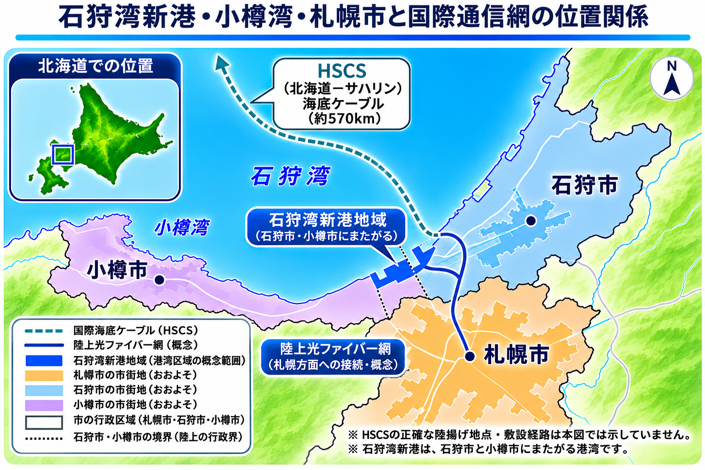

北海道・石狩市
第4章 データセンターより先に、石狩へどのような通信網が整備されたのか
4.1 石狩には、どのような国際通信網が整備されたのか
第3章では、石狩湾新港地域に企業が立地するための土地、港湾、道路、用水などの産業基盤が、長い時間をかけて整えられてきたことを見てきました。そこへ2000年代後半、新しい種類の基盤が加わります。工場で使う水や貨物を運ぶ道路ではなく、日本と海外の間で大量のデータを送る国際通信網です。
2007年2月27日、NTTコミュニケーションズとロシアの通信事業者TransTeleComは、日本とロシアを直接結ぶ海底光ケーブルを共同で建設すると発表しました。計画されたのは、北海道石狩市とロシア・サハリン州ネベルスク市を結ぶケーブルです。名称は「Hokkaido-Sakhalin Cable System」、略してHSCSです。発表時には約500km、最大640Gbpsの通信容量を持つシステムとして計画されていました。（NTT Communications・TransTeleCom「NTT Com and TransTeleCom to Jointly Establish New Undersea Optic Cable System between Japan and Russian Federation」、2007年）
HSCSは2007年末に敷設され、2008年7月3日に商用運用が始まりました。完成時に公表された石狩－ネベルスク間の距離は約570kmで、最大通信容量は640Gbpsです。NTTコミュニケーションズは、この海底ケーブルをTransTeleComがロシア国内に保有する約55,000kmの通信網へ接続し、日本と欧州を結ぶ新しい通信ルートとして運用を開始しました。（NTTコミュニケーションズ・TransTeleCom「日本－ロシア間光海底ケーブルを利用した新ルートの運用開始について」、2008年）
HSCSは、石狩とサハリンの間だけで通信を完結させるためのケーブルではありません。サハリンからロシア国内の大陸横断光ファイバー網へ接続し、さらに欧州へつなぐことで、日本からロシアを横断して欧州へ向かう通信経路の一部を構成しました。2007年の共同発表では、シベリア鉄道に沿う大陸横断通信網と接続することで、東京などアジア側からロシア・欧州へ至る連続した通信経路を形成すると説明されています。
HSCSを使った日本－欧州間の通信経路
日本国内の通信網
↓
北海道・石狩
↓
HSCS
↓
サハリン・ネベルスク
↓
ロシア大陸横断光ファイバー網
↓
欧州
これによって石狩には、港湾から貨物を受け入れる機能とは異なる、もう一つの「入口」が生まれました。海を渡ってきた国際通信回線が陸上の通信網へ接続する地点です。
この時点では、さくらインターネットの石狩データセンターはまだ存在していません。石狩データセンターが開所するのは2011年11月です。つまり石狩は、大規模データセンターができた後に国際通信網へ接続されたのではなく、その約3年前にはすでに国際海底ケーブルの陸揚げ地点になっていました。

4.2 石狩が海底ケーブルの陸揚げ地になったことで、通信経路はどう変わったのか
日本と欧州の間には、HSCSができる以前から通信経路がありました。それでは、石狩からロシアへ向かう新しい海底ケーブルを加えることに、どのような意味があったのでしょうか。
2007年の共同発表では、HSCSを使ったロシア経由の通信網は、日本と欧州をインド洋経由で結ぶ既存ルートの迂回経路として利用でき、地震などの災害が発生した場合のバックアップにもなると説明されています。国際通信では、一つの経路だけに依存していると、その途中で海底ケーブルが切断されたり通信障害が発生したりした際に影響が集中します。別方向へ向かう通信路を持つことは、国際通信網の冗長性を高めることにつながります。
2008年の運用開始時には、ロシア経由のHSCSルートが、米国経由や中東経由の既存ルートに追加されました。NTTコミュニケーションズは、この新しい経路を利用する国際専用線について、自社バックボーン内の通信遅延を従来経路より20～30％短縮できると見込んでいました。これは世界中の日本－欧州通信が一律に20～30％高速化したという意味ではなく、同社がHSCSルートを使って提供する国際通信サービスについて示した値です。
通信経路の変化を整理すると、次のようになります。
HSCS整備前
日本
↓
米国方面または中東・インド洋方面
↓
欧州
HSCS整備後
日本
↓
石狩
↓
サハリン
↓
ロシア
↓
欧州
既存経路がなくなったのではなく、異なる方向へ向かうルートが一つ加わりました。その結果、日本と欧州を結ぶ国際通信では、通信経路を選べる余地が広がり、障害時の迂回や通信距離の短縮に利用できるようになりました。
石狩にとっては、この整備によって地域の性格にも一つの要素が加わります。第3章までに見てきた石狩湾新港地域には、港湾、道路、工業・流通用地、用水などが整備されていました。そこに2008年、国際通信が海から陸へ接続する地点という役割が加わったのです。
なぜ北海道内で石狩が陸揚げ地点となったのかについては、今回確認したNTTコミュニケーションズとTransTeleComの公表資料だけでは分かりません。2007年の発表には石狩とネベルスクを結ぶ計画が示されていますが、北海道内の複数候補地を比較した過程や、石狩を決定した具体的な条件は記載されていません。地理的な位置だけから理由を推測することは避け、確認できる事実と、その後に生まれた立地上の効果を分けて考える必要があります。
4.3 その通信環境は、データセンターの立地判断でどう評価されたのか
HSCSの運用が始まった翌年、石狩の通信環境は別の産業から注目されることになります。さくらインターネットが北海道でデータセンターの建設を検討し始めたためです。
同社代表の田中邦裕氏が2015年にまとめた記録によると、2009年夏、北海道庁大阪事務所から北海道へのデータセンター立地を提案されました。当初、田中氏には北海道にデータセンターを建てる発想はありませんでしたが、提案を受け、同年12月に北海道を視察しています。
石狩で説明を受けたのは、広い土地だけではありません。田中氏は、海底ケーブルの陸揚げ局、特別高圧変電所、周辺の交通や生活に必要な設備などについて説明を受けたと記しています。さらに石狩湾新港地域について、災害リスクが低いこと、札幌から近く人材を確保しやすいこと、特別高圧電力を利用できることと並べて、光ファイバーを調達しやすい点を評価しています。
この記録によって、海底ケーブルの存在が後から「データセンターには便利だったはずだ」と推測されたのではなく、実際に立地を検討していた事業者が、通信環境を現地の条件として確認していたことが分かります。
石狩データセンターの立地までを時系列で並べると、通信基盤が先に存在していたことがさらに分かりやすくなります。
| 年 | 出来事 |
|---|---|
| 2007年 | 石狩－サハリン間の海底光ケーブル建設を発表 |
| 2008年 | HSCSの商用運用開始 |
| 2009年12月 | さくらインターネットが北海道・石狩を視察 |
| 2010年6月 | 石狩データセンター建設を正式発表 |
| 2011年11月 | 石狩データセンター開所 |
2010年6月にさくらインターネットが公表した建設計画では、石狩を、北海道の冷涼な外気を活用でき、東京ドーム約1.1個分の広い敷地を確保できる場所として説明しています。建物を段階的に増設できる設計も採用され、当初から最大8棟まで拡張できる構想が示されていました。（さくらインターネット「クラウドコンピューティングに特化した国内最大級の郊外型大規模データセンターを北海道石狩市に建設」、2010年）
このため、石狩の選定を海底ケーブルだけで説明することはできません。広い土地、冷涼な気候、札幌との距離、災害リスク、電力、通信といった複数の条件が重なっていました。通信環境は、その中の一つとして評価されていたと見るのが適切です。
2011年11月15日、石狩データセンターは開所しました。開所時には2棟が建設され、最大1,000ラックを収容できる構成となっていました。最終的には8棟、最大4,000ラックまで拡張できる計画です。（さくらインターネット「2011年11月15日に石狩データセンターを開所」、2011年）
ここで、HSCSとさくらインターネットの通信網を同じものとして扱うことはできません。田中氏の記録から確認できるのは、海底ケーブル陸揚げ局について説明を受け、光ファイバーを調達しやすい環境を評価していたことまでです。さくらインターネットがHSCSを直接利用する契約を結んでいたことや、同社の通信がHSCSを直接経由していたことは、今回確認した資料からは確認できません。
それでも、時系列には明確な意味があります。国際通信のために整備された通信基盤が2008年には存在し、その翌年、データセンター事業者が石狩を調査した際に、通信環境が立地条件として評価されています。通信網は、データセンター進出後に付け加えられた設備だけではなかったのです。
4.4 海底ケーブルの陸揚げ地であることは、現在の企業誘致でどう位置付けられているのか
石狩の海底ケーブルは、2008年に国際通信を行うための設備として運用を始めました。それから約18年が経過した2026年には、海底ケーブルの陸揚げ地であること自体が、石狩市の産業政策の中で企業立地の条件として扱われています。
石狩市は2026年2月、「市街化調整区域における産業系土地利用に関する基本方針」を決定しました。背景にあるのは、石狩湾新港地域で企業立地が進み、大規模な産業用地が不足し始めたことです。新港地域の周辺まで産業用地を広げる際に、どの産業をどこへ誘導するのかを整理しています。
この基本方針では、デジタル関連産業の立地条件として、まとまった土地、電力・通信インフラ、再生可能エネルギーの利用可能性、災害リスクの低さなどが挙げられています。さらに対象区域を検討する際には、石狩湾新港地域の近傍であることに加え、海底通信ケーブル陸揚げ地の近傍であることが、デジタル関連産業の立地上の優位性として明記されています。
市はその条件を使い、石狩湾新港地域へ接続する国道337号、国道231号、花川通沿線などで、デジタル関連産業や物流産業を中心とした土地利用を検討しています。海底通信ケーブルは、通信事業者が国際回線を構築するための設備であると同時に、その近くに別の産業を呼び込むための立地条件としても評価されるようになったことになります。
この変化は、第3章までに見てきた石狩湾新港地域の形成過程とも重なります。港湾は貨物を扱うためにつくられ、道路は地域と都市圏を結び、工業用水は企業活動を支えるために後から整備されました。それぞれの設備は同じ時期に、同じ目的でつくられたわけではありません。けれども、時間がたつにつれて、それらが一つの地域の中に積み重なり、新しい産業が進出できる条件をつくってきました。
通信網も同じです。HSCSは、さくらインターネットの石狩データセンターを誘致するために建設されたものではありません。2007年のNTTコミュニケーションズとTransTeleComの発表で示された目的は、日本とロシアを直接結び、ロシア大陸横断網を通じて欧州へ接続する新しい国際通信ルートを形成することでした。データセンター誘致を目的とする記述は確認できません。
その国際通信基盤が先に石狩へ存在し、後にデータセンター事業者が立地条件として評価し、現在では石狩市がデジタル関連産業を誘致する際の地域資産として位置付けています。
石狩の通信基盤が持つ役割の変化
2008年
日本－ロシア－欧州を結ぶ国際通信ルートとして運用開始
↓
2009年
データセンター立地候補地の通信環境として評価
↓
2011年
石狩データセンター開所
↓
2026年
海底ケーブル陸揚げ地の近傍性をデジタル関連産業の立地条件として活用
石狩のデータセンター集積は、何もない場所にデータセンターを建設し、その後から必要な通信設備をそろえたという順序ではありません。港湾や産業用地が形成された地域に、国際通信という別の目的で新しい基盤が加わり、その既存基盤が後になってデータセンターやデジタル関連産業を呼び込む条件として使われるようになりました。
第4章では、データセンター進出より先に石狩が国際通信の接続地点になっていたことを確認しました。次の第5章では、その通信基盤の上に建設されたデータセンターへ対象を移し、石狩にどのような施設がつくられ、設備や計算能力がどのように拡大してきたのかを見ていきます。
参考文献
NTT Com and TransTeleCom to Jointly Establish New Undersea Optic Cable System between Japan and Russian Federation
NTT Communications・TransTeleCom、2007年2月27日
https://www.ntt.com/release_e/news07/0002/0227_2.html
日本－ロシア間光海底ケーブルを利用した新ルートの運用開始について
NTTコミュニケーションズ・TransTeleCom、2008年7月3日
https://www.ntt.com/about-us/press-releases/news/article/2008/20080703.html
さくらインターネットの歴史
田中邦裕、2015年12月26日
https://tanaka.sakura.ad.jp/2015/12/sakura-internet.html
さくらインターネット、クラウドコンピューティングに特化した国内最大級の郊外型大規模データセンターを北海道石狩市に建設
さくらインターネット、2010年6月21日
https://www.sakura.ad.jp/corporate/information/newsreleases/2010/06/21/90039/
さくらインターネット、2011年11月15日に石狩データセンターを開所
さくらインターネット、2011年11月7日
https://www.sakura.ad.jp/corporate/information/newsreleases/2011/11/07/90059/
石狩市都市整備骨格方針／市街化調整区域における産業系土地利用に関する基本方針
石狩市、2026年2月10日決定
https://www.city.ishikari.hokkaido.jp/shisei/shiseiunei/1001914/1004268.html
市街化調整区域における産業系土地利用に関する基本方針
石狩市、2026年2月10日決定
https://www.city.ishikari.hokkaido.jp/_res/projects/default_project/_page_/001/004/268/houshin260212.pdf